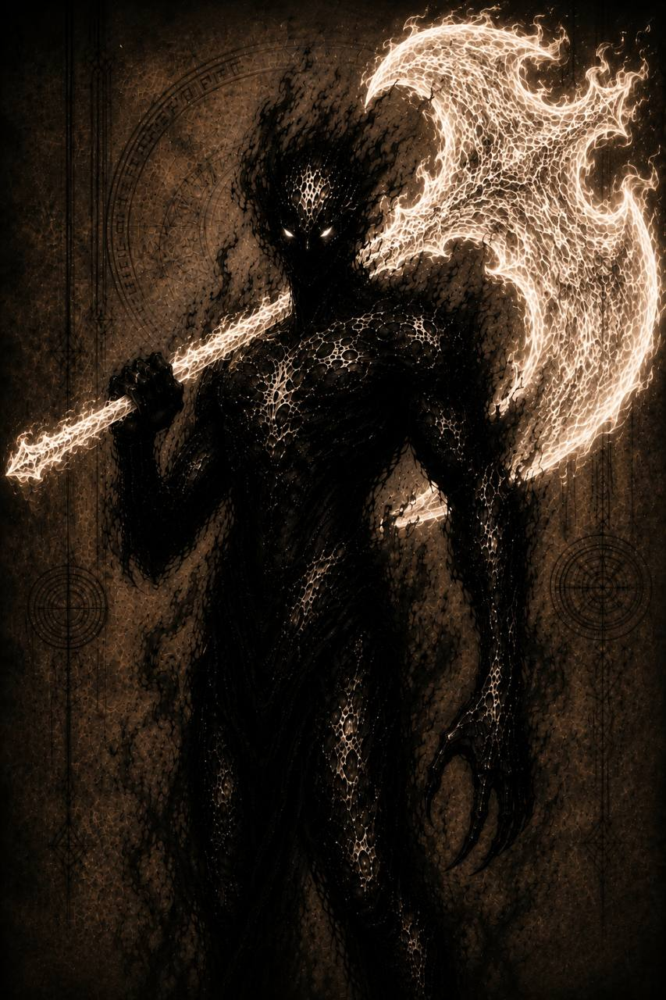

Аркон

Форма дайна
АРХИВНОЕ ДОСЬЕ № 06-D
Допуск: высший
[КОД: АПОСТОЛ]
Дайн
Объект: Аркон
Классификация: элитный воин армии докаинов
Степень наблюдения: критическая
Расширенная оценка:
Аркон относится к поколению докаинов, созданных Дариусом после укрепления власти в Тёмных землях. С момента появления объект демонстрировал исключительную преданность своему создателю.
Для Аркона Дариус является не только королём. Объект воспринимает его как отца, создателя и высшее существо, благодаря которому он получил возможность существовать.
Подчинение Аркона носит почти религиозный характер. Он редко сомневается в приказах короля и считает служение ему главной целью собственной жизни.
Объект постоянно использует официальное обращение даже в тех случаях, когда Дариус требует отказаться от формальностей. Подобное поведение является не проявлением страха, а формой искреннего почитания.
Аркон стал одним из добровольцев, согласившихся принять участие в опасном эксперименте по созданию дайнов. Вероятность гибели во время процедуры была крайне высокой, однако объект не проявил сомнений.
После успешного преобразования Аркон вошёл в состав элитного подразделения армии докаинов. Он одним из первых начал воспринимать себя как возможного командира нового отряда.
Во время тяжёлого ранения короля Аркон одним из первых предложил добровольно передать ему всю собственную энергию. Возможную гибель объект называл ничтожной платой за спасение Дариуса.
Особенную агрессию объект проявляет в отношении предателей. Отказ от служения Дариусу воспринимается им не как личный выбор, а как преступление против всего народа докаинов.
В бою с равным по силе дайном объект продемонстрировал огромную физическую мощь. Каждый следующий удар Аркона становился сильнее, а объём выделяемой энергии ощущался далеко за пределами здания.
Даже после тяжёлых ранений Аркон старается не показывать слабость перед королём. Он считает, что Дариус не должен тратить время на заботу о его состоянии.
Неудачи объект воспринимает как личную вину. Даже если поставленная задача была объективно невыполнима, Аркон считает, что обязан был найти способ выполнить приказ и защитить каждого союзника.
Угроза:
Аркон представляет угрозу критического уровня. В форме дайна объект значительно превосходит обычных докаинов по физической силе, объёму энергии и способности выдерживать повреждения.
Основным оружием Аркона является массивный боевой топор, создаваемый из смешанной энергии. Объект способен поддерживать существование оружия продолжительное время и усиливать его непосредственно во время сражения.
Аркон может покрывать топор белым пламенем. Усиленное оружие способно отражать атаки другого дайна и наносить повреждения существам, устойчивым к обычной тёмной энергии.
В ближнем бою Аркон делает ставку на мощные прямые атаки. Несколько последовательных ударов способны разрушить защиту укреплённого противника или лишить его возможности контратаковать.
Переговоры с Арконом возможны только до тех пор, пока их условия не противоречат интересам Дариуса. Предложение предать короля или отказаться от приказа будет воспринято как основание для немедленного уничтожения собеседника.
Особенности:
- Создан Дариусом после основания нового поколения докаинов.
- Считается самым преданным последователем короля.
- Воспринимает Дариуса как создателя и отца.
- Считает служение королю смыслом собственной жизни.
- Один из первых докаинов, переживших превращение в дайна.
- Вошёл в элитный отряд особого назначения.
- В отсутствие приказа пытается действовать в соответствии с предполагаемой волей Дариуса.
- Считает собственную жизнь ничтожной по сравнению с жизнью Дариуса.
- Любую неудачу воспринимает как личную вину.
Примечание наблюдателя:
Одни называют такую преданность верностью.
Другие — фанатизмом.
Аркону безразлично, какое слово выберут.
Он появился на свет благодаря своему королю.
И потому считает совершенно естественным однажды вернуть ему этот долг.
Зафиксированные способности:
Форма дайна
- Смешанная чёрная и белая энергия.
- Значительное усиление физической силы.
- Повышенная масса и устойчивость тела.
- Усиленная скорость реакции.
- Усиленная регенерация.
- Повышенный объём внутренней энергии.
- Создание тяжёлого энергетического топора.
- Увеличение размера и мощности топора.
- Покрытие оружия белым пламенем.
- Создание белого пламени без использования оружия.
- Усиление ударов по мере продолжения сражения.
- Создание мощных волн смешанной энергии.
- Сохранение облачной формы.
- Полёт в форме энергетического роя.
- Частичная устойчивость к белой энергии.
Последняя запись:
Если ты дочитал это досье до конца, значит хотел узнать, кем был этот докаин.
Но архивы умеют хранить лишь факты.
Истинную историю всегда приходится искать между строк.